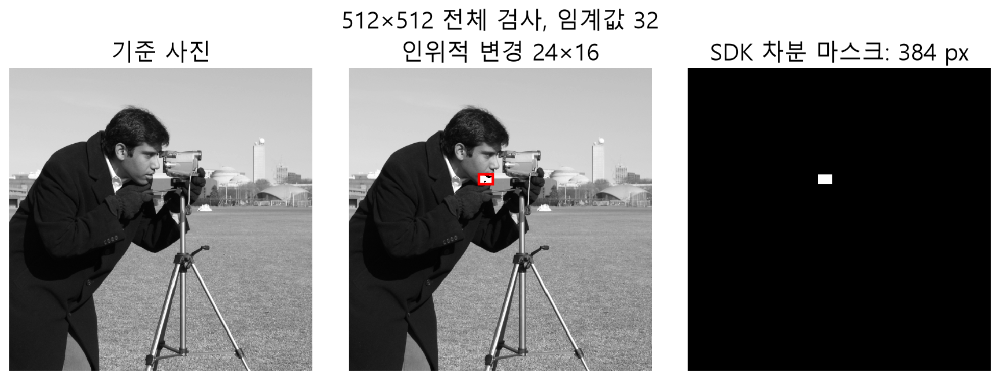

차분과 판정
포함 픽셀에서 기준 ≈ gain × 입력 + bias로 보정하고 잔차 r = gain × 입력 + bias − 기준을 계산합니다. None은 (1,0), Offset은 gain 1과 평균 차이, GainOffset은 선형 회귀를 사용하며 입력 분산이 0이면 gain 1로 처리합니다. 극성에 따라 |r|, max(r,0), max(−r,0)을 선택하고 점수 = 크기 / (threshold + textureWeight × 기준 국소 표준편차)입니다. 점수 1 이상은 마스크 255, 제외 픽셀 출력은 0입니다. 보정은 실제 결함도 흡수할 수 있으므로 보정용 영역과 한계를 검증하세요.

판독 기준
- 픽셀 변화는 인위적이며 자연 결함 사례가 아닙니다.
- 임계값 32에서 SDK 마스크와 독립 차분의 384픽셀이 일치합니다.
공개 camera 사진에 24×16픽셀의 인위적 변경을 넣은 통제 예입니다. SDK 마스크 384개 픽셀을 NumPy 절대 차이와 대조했습니다. 실제 생산 불량의 검출 성능을 평가한 자료는 아닙니다.
마스크의 연결 요소를 면적으로 필터하고 회전 사각형의 길이·폭·종횡비가 모두 스크래치 조건이면 Scratch, 아니면 Surface입니다. Judge는 개수, 총 면적, 최대 개별 면적, 허용 영역을 검사합니다. 상한과 같은 값은 허용하며 사유 비트는 함께 설정될 수 있습니다.
참조 영상과 비교할 표본은 먼저 위치를 맞춘 뒤 선택합니다. 밝기 보정을 사용하면 포함된 픽셀에서 기준에 가까워지도록 입력의 배율과 편향을 구하고, 보정된 입력에서 기준을 빼 부호 있는 잔차를 만듭니다. 절댓값은 밝아진 결함과 어두워진 결함을 함께 다루고, 극성을 선택하면 한 방향의 변화만 점수에 반영합니다. 조명 보정은 넓게 퍼진 변화뿐 아니라 일부 결함의 크기도 바꿀 수 있으므로 보정에 포함할 영역을 신중히 정해야 합니다.
점수는 선택한 잔차의 크기를 기본 허용치와 기준 이미지의 국소 질감에 따른 추가 허용치로 나눈 값입니다. 1 이상인 픽셀을 연결 요소로 묶고, 면적 필터를 지난 검출 후보의 개수와 크기 및 위치를 판정합니다. 전체 판정 실패 사유와 개별 검출 후보의 위반 기록은 다른 수준의 정보입니다.
예컨대 밝기 차의 크기가 허용치와 정확히 같으면 점수는 1이며 마스크에 포함됩니다. 면적 필터와 최종 허용 한도는 서로 다른 단계입니다.
밝기 보정과 질감 허용치
차분의 입력과 기준이 같은 위치를 가리킨다는 가정 아래 포함 픽셀의 잔차를 계산합니다. NONE은 원래 밝기 차이를 사용합니다. OFFSET은 gain을 1로 두고 선택된 입력과 기준의 평균 차이를 bias에 반영합니다. GAIN_OFFSET은 선택된 입력을 기준에 근사하는 선형 배율과 편향을 사용하며, 입력 분산이 0이면 배율 1을 사용하는 경우가 있습니다. 이 회귀는 위치 이동 자체를 수정하는 과정이 아닙니다.
점수 분모는 기본 threshold에 textureWeight × 기준의 국소 표준편차를 더한 값입니다. 예를 들어 threshold 5, 가중치 1, 표준편차 3이면 허용치는 8입니다. 절대 잔차가 8이면 점수는 1이고 결함 마스크에 포함됩니다. 같은 잔차에서 표준편차가 0이면 점수는 1.6이 됩니다. 질감 허용은 무늬가 많은 위치의 작은 차이에 대한 민감도를 바꾸므로 무조건 키우는 설정이 아닙니다.
보정에 쓰는 선택 집합은 include 마스크로 정하고 비제로 위치만 포함합니다. 제외 픽셀의 출력 0은 실제로 검사해 차이가 0이었다는 증거가 아닙니다. 보정 계수, InspectedCount, 최대 점수와 마스크를 함께 읽으면 전역 밝기 변화와 국소 후보의 기여를 분리해 볼 수 있습니다.
| 값 | 계산 예 | 해석 |
|---|---|---|
| 기본 threshold | 5 | 양의 밝기 허용치 |
| 질감 보정 | 1×3 | 허용치 3 추가 |
| 점수 | 8/(5+3)=1 | 전경 경계 포함 |
| 제외 픽셀 | 마스크 0 | 검사 정상으로 단정 불가 |